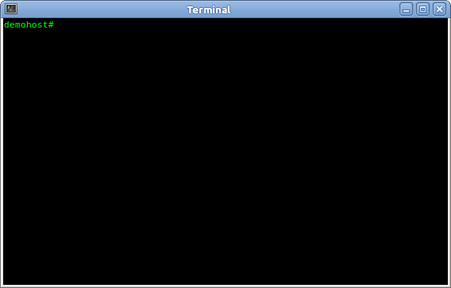

Filmati: Esempio 2
Questo è un esempio dimostrativo dell'aspetto e dell'interazione con
l'utente di CCFE.

- Elenca le scorciatoie disponibili;
- Seleziona dal menu la form da caricare;
- Dalla form ask_user.form, richiama la lista degli account definiti nel sistema e cerca quello che inizia con "ccfe";
- Richiama la form usermod.form riempiendo automaticamente i campi con i valori correnti dell'account selezionato;
- Modifica il valore del campo Comment;
- Modifica il campo Login shell selezionandone il valore dall'elenco di shell installate nel sistema;
- Modifica lo stato di blocco dell'account;
- Dopo aver premuto il tasto <Enter>, non conferma l'esecuzione dell'azione della form;
- Visualizza nella finestra pop-up i comandi dell'azione della form e successivamente la esegue;
- Attende qualche secondo ed esce da CCFE.